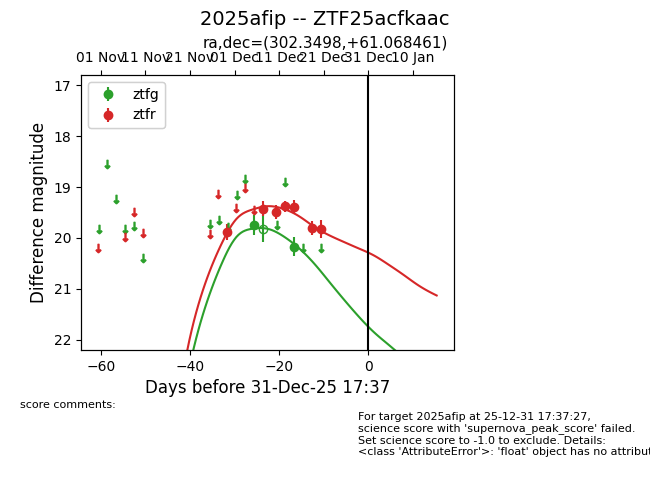
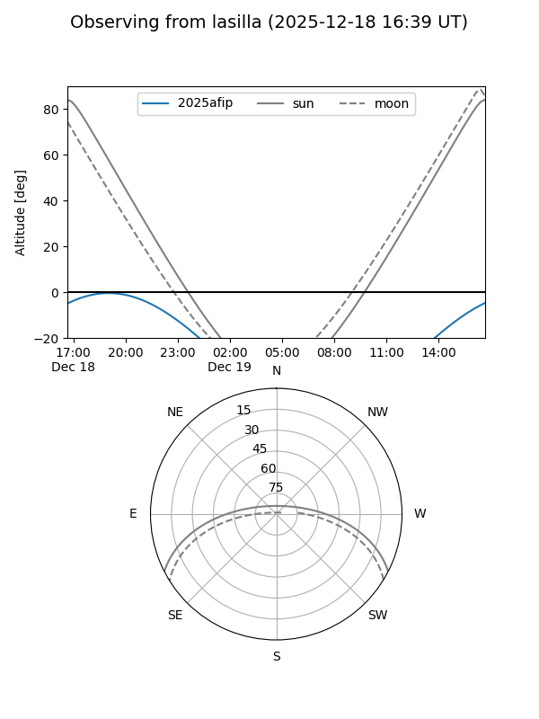
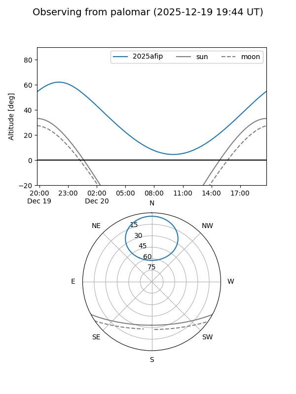
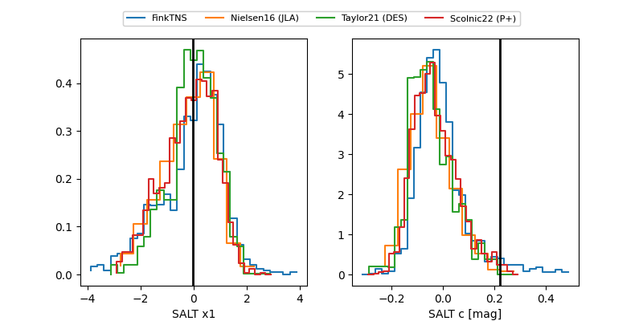

2025afip
Target 2025afip at 2025-12-21 04:13
Aliases and brokers:
FINK: fink-portal.org/ZTF25acfkaac
Lasair: lasair-ztf.lsst.ac.uk/objects/ZTF25acfkaac
ALeRCE: alerce.online/object/ZTF25acfkaac
TNS: wis-tns.org/object/2025afip
YSE: ziggy.ucolick.org/yse/transient_detail/2025afip
alt names
ZTF25acfkaac (ztf,fink_ztf)
2025afip (tns,yse)
Coordinates:
equatorial (ra, dec) = 302.3498,+61.06846
equatorial (HMS+DMS) = 20:09:23.96,+61:04:06.46
galactic (l, b) = (94.7879,+14.79882)
Flags:
Photometry:
last ztfg=20.17, ztfr=19.82
2 ztfg, 7 ztfr detections
Lightcurve

Visibility


Additional plots
